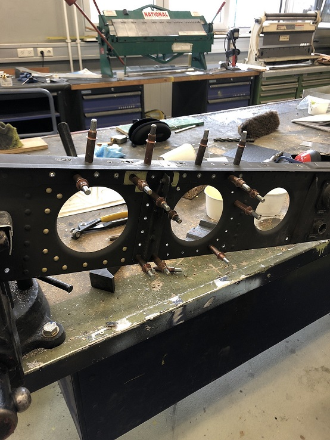

My job as an Aircraft Structural Repairer had many responsibilities. From treating the metal prior to repairs, to cutting out sections of the
helicopter, fabricating parts, installing, and reenforcing the repairs.
We worked with several types of metals; from aluminum, steel, titanium, and even O material aluminum which is a soft and pliable
metal that we would shape complex parts and then it has to be baked in a kiln.
This is a repair that I personally completed on an oil cooler support beam.